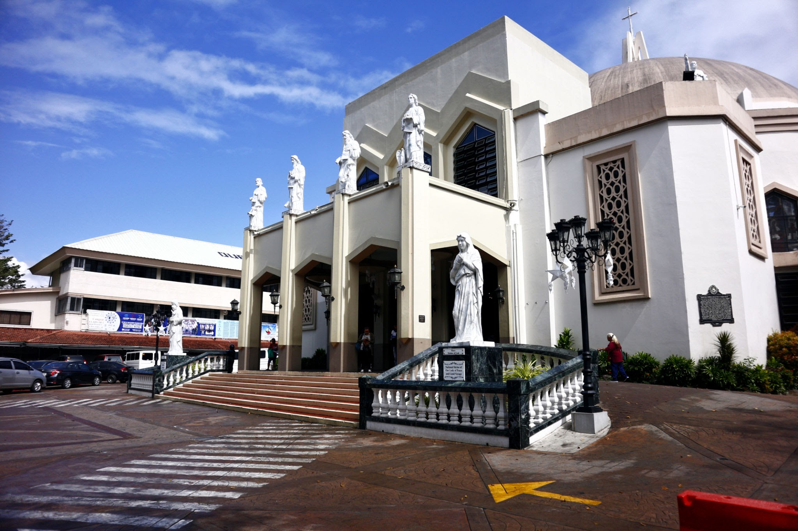

Antipolo is a city east of Manila in the Philippines. It's known as a Catholic pilgrimage site. In the Antipolo Cathedral, the shrine to Our Lady of Peace and Good Voyage has a 17th-century statue of the Virgin Mary, and attracts thousands of visitors each year. Southwest, the Pinto Art Museum displays contemporary Filipino paintings and sculpture in tropical gardens and whitewashed, Mediterranean-style villas.
Antipolo City, formerly Antipolo Rizal, is known for the Shrine of Our Lady of Peace and Good Voyage and especially the "suman at mangga".
Antipolo City is located in the province of Rizal, Philippines. It covers an area of approximately 306 square kilometers and has an elevation of 156 meters above sea level. The city is divided into several neighborhoods, including Mayamot, Cupang, San Jose, Mambugan, and more.
The current mayor of Antipolo City is Casimiro Ynares III. He has been serving as the mayor since 2016 and is dedicated to the progress and development of the city.